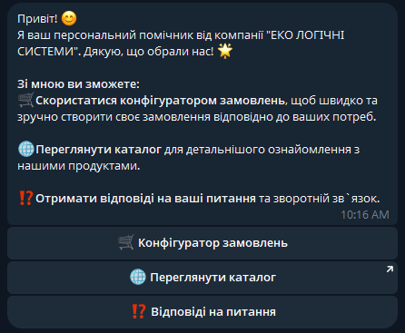

Опис роботи
У сучасному світі компанії все частіше звертаються до інформаційних технологій для оптимізації процесів обслуговування клієнтів. Компанія "ЕКО ЛОГІЧНІ СИСТЕМИ" прагне спростити процес конфігурації замовлень за допомогою Telegram-бота.
Актуальність теми
Інтеграція чат-бота дозволяє компанії значно покращити взаємодію з клієнтами, забезпечивши швидкий і зручний спосіб оформлення замовлень.
Мета та завдання
Мета дослідження: розробка інформаційної системи для автоматизації процесу замовлень.
- Розробка телеграм-бота
- Розробка дизайну Telegram-бота
- Підвищення ефективності та зручності замовлень
Очікувані результати
Telegram-бот для оформлення замовлень з підтримкою індивідуальних налаштувань.
Використані технології
Для створення Telegram-бота було використано мову програмування Python та бібліотеку Telebot.
Контактна інформація
Автор: Студент спеціальності Комп'ютерні науки
Email: student@example.com
Візуальні матеріали
